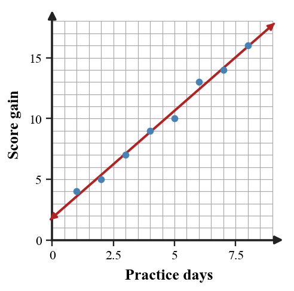

11.
The area model is intended to represent $(x+2)(x+3)$, but one cell is incorrect. Identify the mismatch, revise the model, and explain how the product should expand.

This activity pushes the section skill into comparison and explanation. Make sure your work shows why your choice or model fits.
For $g(x)=x^2-1$, find $g(-2)$.
A rule is described as "triple the input, then subtract $8$." Generate four ordered pairs using inputs $0,1,2,3$.
Analyze the structure of these two rules: $f(x)=2(x+3)$ and $g(x)=2x+6$. Do they always give the same output for the same input, or only sometimes? Justify with structure and one substitution check.
A table for an input-output rule is flawed: $(0,3),(1,6),(2,9),(2,12),(3,12)$. Revise the relation in two different ways: one revision that makes it a function with a constant increase, and one revision that makes it a function but not a constant-increase rule. Explain both choices.
Use order of operations to simplify.
Evaluate each root expression.
Substitute $x=-2$ and $y=-5$ into each expression.
Evaluate $|2x-7|+x^2$ for $x=-3$ and for $x=4$. Which input gives the larger output, and by how much?
A rectangular pattern has expression $2(l+w)$ for its border length. Evaluate the expression for $l=7.5$ and $w=3.25$, then state what the value represents.
Rewrite $5(2x-3)+4x$ as a simplified expression. Show both the distribution step and the combining-like-terms step.
The area model is intended to represent $(x+2)(x+3)$, but one cell is incorrect. Identify the mismatch, revise the model, and explain how the product should expand.
Write a context where $4(a+3)$ and $4a+3$ would mean different things. Evaluate both for the same value of $a$ and explain the difference in meaning.
A graph crosses the vertical axis at $({0},{12})$. In a situation about a water tank, what could ${12}$ represent?
The scatter plot shows practice days and score gain. Describe the overall association and identify one point that supports your description.

A rule has the same output for every input. Construct an example table and symbolic rule, then explain why the output is constant even as the input changes.
A school club’s table shows inputs ${0}$, ${1}$, ${2}$, ${3}$ with outputs ${10}$, ${14}$, ${17}$, ${22}$. Revise the flawed model by deciding whether one output is likely an error, replacing it, and writing a rule that fits the corrected table.